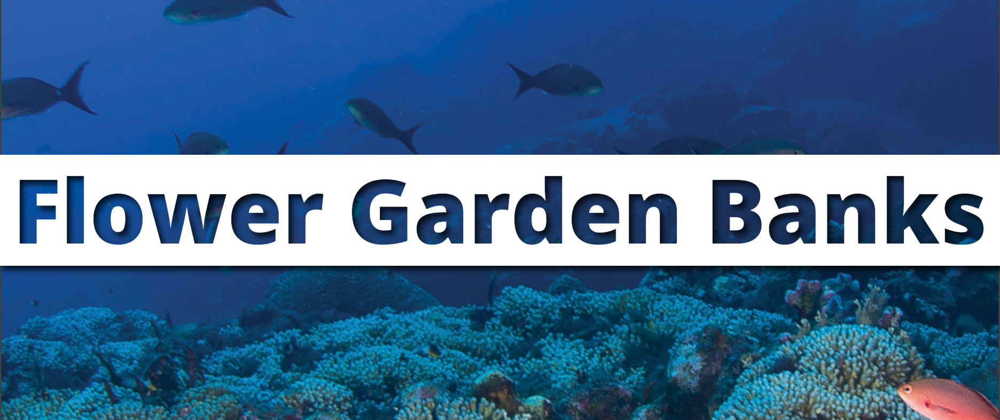
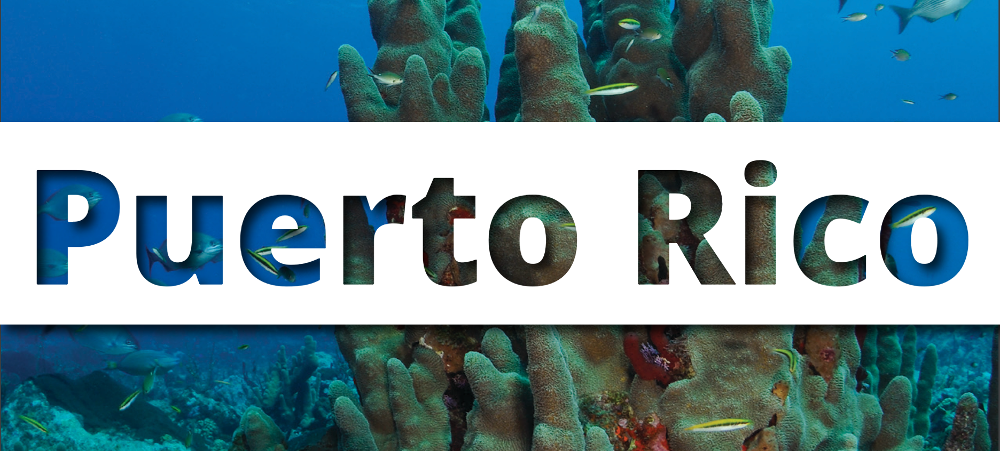
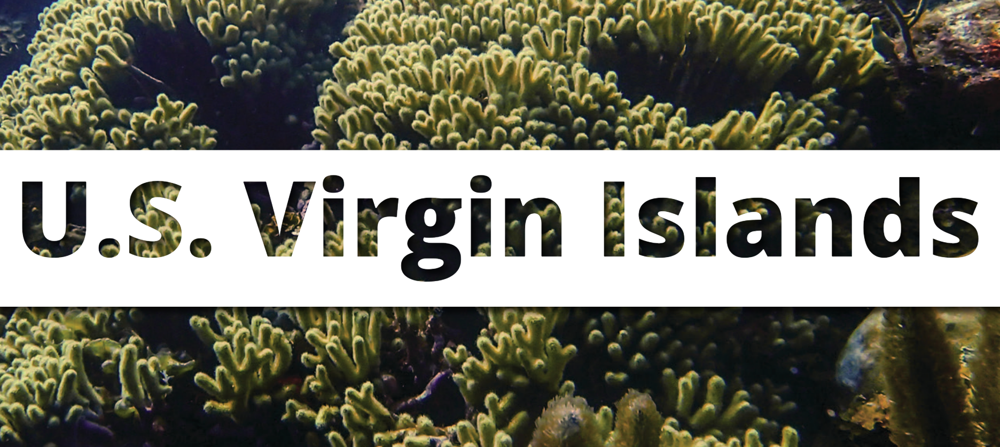

Status Report

Tech Reports



NOAA's Coral Reef Conservation Program (CRCP) supports the National Coral Reef Monitoring Program (NCRMP) throughout the U.S. Pacific, Atlantic, Gulf of Mexico, and Caribbean coral reef areas. This program is a strategic framework for conducting sustained observations of biological, climatic, and socioeconomic indicators in U.S. states and territories. The resulting data provide a robust picture of the condition of U.S. coral reef ecosystems and the communities connected to them. The jurisdictional reports provide a regional specific analysis of data, while the national reprt contetualizes all of the jurisdictional reports.